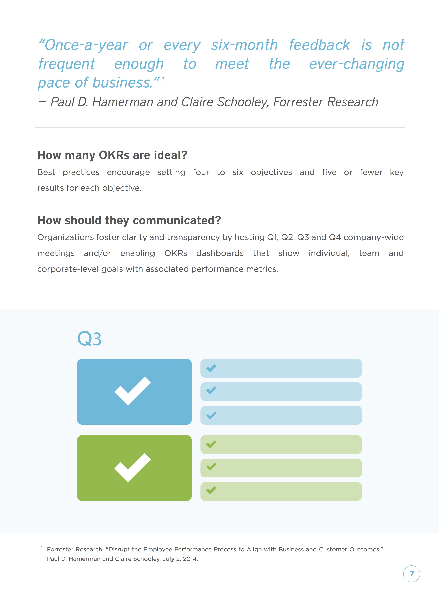
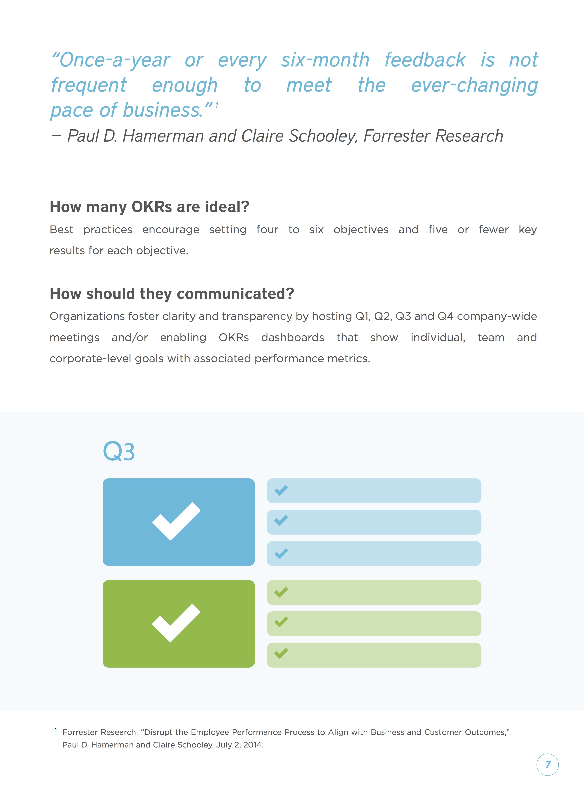

In 1999, John Doerr introduced Objectives – Key Results (OKRs) to Google, a model he first learned about at Intel, and revolutionized goal setting. Today, OKRs are a de facto standard for aligning company and individual goals.
A management methodology that helps businesses focus effort on the same important issues throughout their organization, OKRs have been cornerstones to improving operational excellence at industry leaders such as Intel, Oracle, Google and others. Yet as employees leave these companies for start-ups and other ventures of their own, from Twitter and Zynga to LinkedIn, they are bringing the OKRs model with them as a way to drive organizational alignment.

 



By Edie | June 3，2017